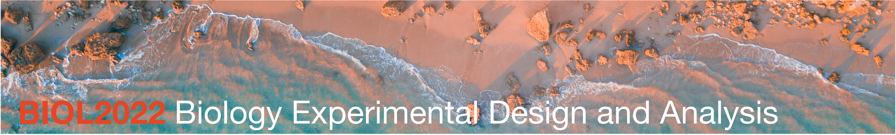

Unit information

Thank you for joining BIOL2022: Biology Experimental Design and Analysis, also known as BEDA (🐝-da). The ability to critically evaluate evidence is a fundamental life skill. In BEDA, we build this skill through hands-on work in experimental design and data analysis. How do we design a robust study? How does a study’s design shape its results? How do we choose statistical tools that fit the research question? The reasoning skills you develop will be invaluable not just in biology, but in any future career path you choose.
While the focus of BEDA is on the reasoning behind data analysis and interpreting results, we also provide practical guidance on using software. We recommend Jamovi if you are new to statistical software. If you already have experience with R, you are welcome to use it. SPSS and PRIMER are also supported but we prefer to use open-source software where possible as they remain accessible to all.
Click on the tabs above to find out more about the unit.
If you have not studied statistics before, BEDA WILL BE CHALLENGING
BEDA is designed to build on introductory statistics (rather than teach it from the beginning). We use ideas such as data types, sampling variation, hypothesis testing, p-values, confidence intervals and simple statistical models from the opening weeks. This allows us to spend more time on designing biological studies, building appropriate models and interpreting evidence.
Because BEDA has broad prerequisites, qualifying for enrolment into this unit does not always mean that you have studied statistics. However, taking a first-year statistics unit is an assumed knowledge for BIOL2022. Not fully meeting the assumed knowledge may make BEDA extremely challenging as we have limited time to explain basic concepts that are assumed to be known from first-year statistics.
Some enthusiastic students choose to take BEDA straight after their first semester of first year. If this is you, there may be extra challenges, as report writing, group work, and time management skills are usually developed across the full first year of university. For this reason, we strongly recommend taking BEDA in your second year (as intended), so you are better prepared for the workload and expectations of a unit designed for students with more experience.
If you decide to stick around, use Am I ready for BEDA? to see what you need to review so that you can get the most out of the unit.
BEDA is organised into three modules, each taught by a different lecturer. Ideas introduced early in the unit continue through the semester as they are applied to different kinds of biological research. Importantly the focus is on the reasoning behind the analysis and how the data are collected, rather than just the analysis itself.
Module 1 (Weeks 1–5)
Januar introduces the foundations of study design and statistical modelling. You will look at how a research question, the way a study is designed and the data you collect come together in a model. Some students may be familiar with these ideas from first-year statistics, but we will explore them in a new context. Importantly, we will use this module to ensure that all students are on the same page with the foundations of study design and statistical modelling, so that we can build on these ideas in later modules.
The module will introduce you to the following familiar ideas in a new context:
- sampling and how it affects the conclusions you can draw
- study design and variables
- graphical models
- the general linear model (GLM)
- model assumptions of the GLM
- transformations and why we use them
- control variables and random effects as opposed to procedural controls
These ideas help you begin designing your experiment for Report 1.
Module 2 (Weeks 6–8)
Clare develops the modelling workflow through univariate experiments, where the analysis focuses on one response variable. You will examine experiments involving categorical predictors, continuous relationships and binary responses, then consider how to choose between possible models.
The module will see your starting to collect data for Report 1. You will also be coached on how to write a report that clearly communicates your study design, analysis and interpretation of results. Additional concepts introduced in this module include:
- binary responses
- non-normal data and dealing with it
- picking the right model and choosing between models
Module 3 (Weeks 9–12)
Mat extends the same reasoning to multivariate data, where several response variables are considered together. You will learn how ordination methods such as principal component analysis and multidimensional scaling can reveal patterns in complex datasets, how clustering identifies similar observations, and how multivariate tests evaluate evidence for group differences. Importantly, you will learn that multivariate methods are great for exploring patterns that you see in the world around you (and are thus very popular in biology).
Report 2 brings these ideas together. You will design a multivariate study, collect a group dataset and use it to describe, test and interpret patterns in your environment. We will cover:
- the reason behind multivariate methods
- the ordination methods PCA and MDS
- clustering
- multivariate tests for group differences using PERMANOVA
- ANOSIM and SIMPER for post-hoc analysis
There are two lectures each week. Unfortunately we do not get to pick the locations, so they are held in different buildings on different days. You are expected to attend 80% of lectures in one way or another. We record this attendance in-person and online when you watch the recordings.
- Tuesday, 10–11 am — Belinda Hutchinson Building, Lecture Theatre 1110
- Wednesday, 10–11 am — Sydney Nanoscience Hub, Lecture Theatre 4002 (Messel)
You will also attend one two-hour practical each week in your allocated class:
- Tuesday, 2–4 pm or 4–6 pm
- Wednesday, 2–4 pm or 4–6 pm
- Friday, 2–4 pm or 4–6 pm
All practicals are held in Carslaw Building, Wet Lab 307. Check your personal timetable for your allocated class and any timetable changes. Do note that because we are a large cohort, once you are allocated to a practical class, you cannot change it. To change your practical class, you must contact the unit coordinator and provide a valid reason, normally a time table clash with another unit or caring responsibilities.
Attendance: You are expected to participate in at least 80% of timetabled activities and must attend at least 10 of the 12 practicals. See Attendance under the Code of Conduct for further details.
A code of conduct is a shared agreement about how we learn and work together.
BEDA should be a respectful and inclusive place to learn. Treat classmates and staff with courtesy, including when you disagree. Use people’s correct names and pronouns, respect different backgrounds and levels of experience, make space for others to contribute, and avoid disrupting lectures or practicals. Discrimination, intimidation and harassment are not acceptable. Follow staff instructions and all laboratory safety requirements when working in laboratory spaces.
Working with your group and data
Contribute fairly to your group’s work and raise participation problems early. As with any group work, the issues that arise are often best resolved by talking to your group members first. It is important to use a group charter to clarify expectations and responsibilities including how to share data and work together.
Share group data and the information needed to interpret it promptly. Never fabricate data, or omit or alter observations without documenting and justifying the decision. You may discuss your analysis with your group, but any individual report must be written and submitted independently.
More information on how to work work with your group is provided with the Report 1 and Report 2 instructions. If you are unsure about what is acceptable, ask your practical demonstrator or the unit coordinator.
Attendance
Attend lectures live where possible. If you miss a lecture, watch the recording promptly. You are expected to have attended or watched the Tuesday lecture before your practical. Because practicals run on Tuesday, Wednesday and Friday, the Wednesday lecture is not assumed knowledge for that week’s practical, but you should attend or watch it during the same week.
You must attend at least 10 of the 12 practicals to meet the 80% attendance requirement. Practical attendance is not managed through special consideration. Record your own attendance during each practical using the QR code or website link, then check that it has been recorded correctly. You have one week to request a correction.
Raising a concern
For routine group-work, data-sharing or class concerns, speak with your practical demonstrator or the unit coordinator as early as possible. You do not need to approach the teaching team first if the matter is serious or you would be uncomfortable doing so. The University provides separate pathways for complaints, bullying, harassment and discrimination and confidential support through Safer Communities for sexual harm or gender-based violence. In an immediate emergency, call 000 and follow the University’s emergency and campus safety guidance.
For publication, edition, licensing and citation details, see About this handbook.